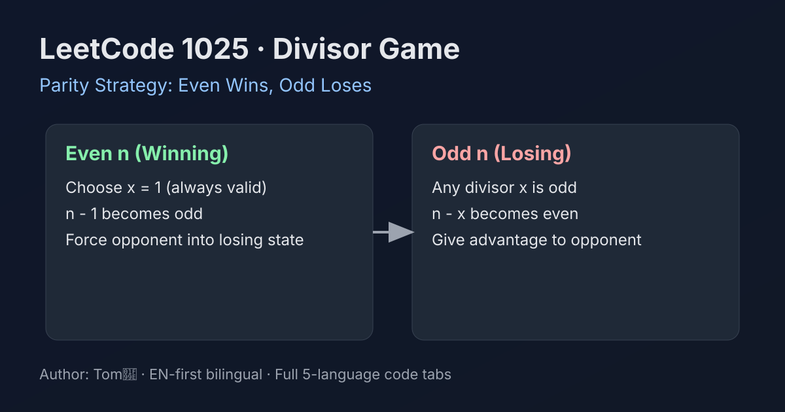

LeetCode 1025: Divisor Game (Parity Strategy: Even Wins, Odd Loses)
LeetCode 1025MathGame TheoryToday we solve LeetCode 1025 - Divisor Game.
Source: https://leetcode.com/problems/divisor-game/

English
Problem Summary
Alice and Bob start with an integer n. On each turn, a player chooses x such that 0 < x < n and n % x == 0, then replaces n with n - x. A player who cannot move loses. Determine whether Alice wins if both play optimally.
Key Insight
The winning condition depends only on parity: even n is winning, odd n is losing.
Why This Works (Proof Sketch)
- If n is odd, every divisor x is also odd, so n - x becomes even. So an odd state can only move to even states.
- If n is even, choose x = 1 (always valid), then n - 1 is odd. So an even state can always move to an odd state.
- Therefore odd states are losing (they hand the opponent even), and even states are winning (they can hand opponent odd).
Optimal Algorithm Steps
1) Check if n is even.
2) Return true for even, false for odd.
Complexity Analysis
Time: O(1).
Space: O(1).
Common Pitfalls
- Overcomplicating with DP when parity observation is sufficient.
- Forgetting that x = 1 is always a legal move when n > 1.
Reference Implementations (Java / Go / C++ / Python / JavaScript)
class Solution {
public boolean divisorGame(int n) {
return (n & 1) == 0;
}
}
func divisorGame(n int) bool {
return n%2 == 0
}
class Solution {
public:
bool divisorGame(int n) {
return (n % 2) == 0;
}
};
class Solution:
def divisorGame(self, n: int) -> bool:
return n % 2 == 0
var divisorGame = function(n) {
return n % 2 === 0;
};
中文
题目概述
Alice 和 Bob 轮流操作整数 n。每一步选择 x，满足 0 < x < n 且 n % x == 0，然后令 n = n - x。无法操作的人输。问先手 Alice 在双方最优策略下是否必胜。
核心思路
这个题本质是奇偶博弈：n 为偶数时先手必赢，n 为奇数时先手必败。
为什么成立（证明思路）
- 当 n 为奇数时，它的约数 x 也只能是奇数，因此 n - x 一定是偶数。也就是说奇数状态只能走到偶数状态。
- 当 n 为偶数时，先手总能选 x = 1，于是 n - 1 是奇数，主动把对手送入奇数状态。
- 所以奇数状态是必败态，偶数状态是必胜态。
最优算法步骤
1）判断 n 是否为偶数。
2）偶数返回 true，奇数返回 false。
复杂度分析
时间复杂度：O(1)。
空间复杂度：O(1)。
常见陷阱
- 把题目做成 DP，代码更复杂但没有必要。
- 忽略 x = 1 始终可选（当 n > 1）。
多语言参考实现（Java / Go / C++ / Python / JavaScript）
class Solution {
public boolean divisorGame(int n) {
return (n & 1) == 0;
}
}
func divisorGame(n int) bool {
return n%2 == 0
}
class Solution {
public:
bool divisorGame(int n) {
return (n % 2) == 0;
}
};
class Solution:
def divisorGame(self, n: int) -> bool:
return n % 2 == 0
var divisorGame = function(n) {
return n % 2 === 0;
};
Comments